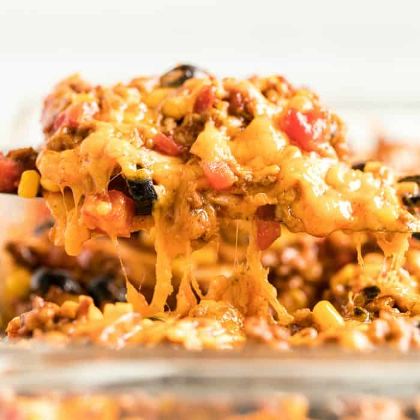

Taco Casserole

I was going to use the recipe my grandmother uses to make my favorite dish when I visit her. Unfortunately, however, I have misplaced that recipe. Instead, here is a taco casserole recipe with a few additional comments of my own that I have retrieved from this link so that I can practice my website building skills with the little bit of HTML I have learned so far!
Ingredients
- 1.5 Pounds of Ground Beef
- 1 Yellow Onion
- 4 Softshell flour (or corn) tortillas
- 1 package of taco seasoning mix (be sure to also have the water that the taco seasoning package requires)
- 2 Cups of Cheddar Cheese
- 1 10-oz can of Rotal
- 1 2.25-ox can of sliced black olives (this can be skipped if you, like me, are not a fan of olives!)
- 1 15-oz can of corn
The Directions
- If you have not yet done so, gather all of the ingredients listed above!
- Brown the ground beef and onions until the ground beef is no longer pink, and the onions are tender.
- Mix the taco seasoning and the required amount of water for the seasoning into the meat, and cook for about 10 minutes.
- Add the rotel, olives (if you choose to add olives), and corn into the beef mixture, and let simmer for 3-5 minutes.
- If you are using a glass pan, choose a 9x13 inch dish or one of similar size, and spray it with a non-stick spray. If you choose to use stoneware, do not spray nonstick spray onto your pan!
- Place two of your tortillas on the bottom of the dish, and spread half of the meat mix evenly on top of the layer of tortillas.
- Sprinkle half of the cheese over the meat.
- Follow the last two steps again, so that, from the bottom, you have a layer of tortilla, a layer of meat, a layer of cheese, another layer of torilla, a second layer of meat, and a second layer of cheese.
- Bake at 350 degrees until the cheese is melted. This will likely take about 20 minutes.
- Remove your dish from the oven! It is best to let it cool for a few minutes, and then serve the dish with your favorite taco toppings! My own family typically loves to add corn chips, sour cream, extra cheese, and diced onions on top!